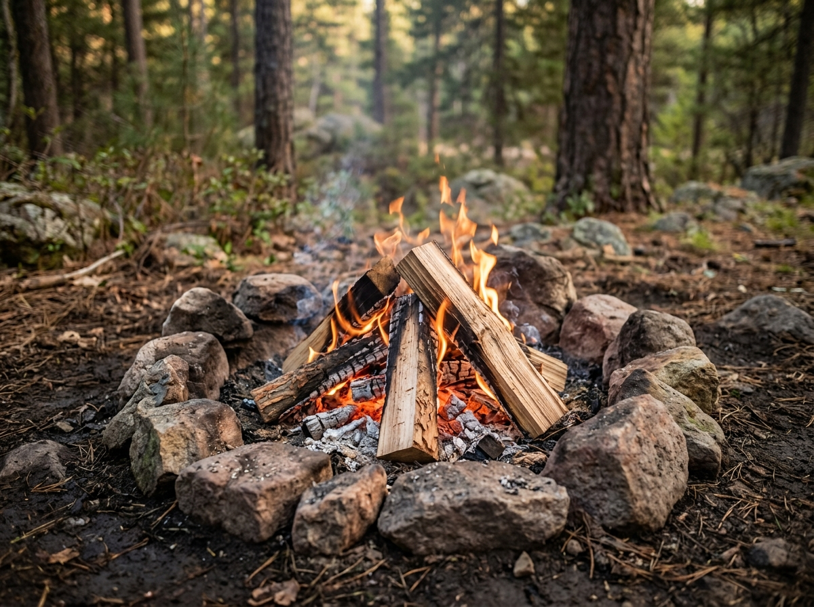
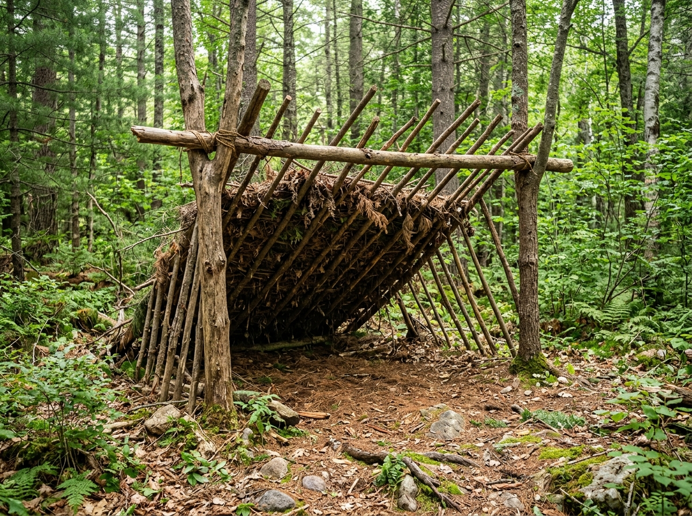
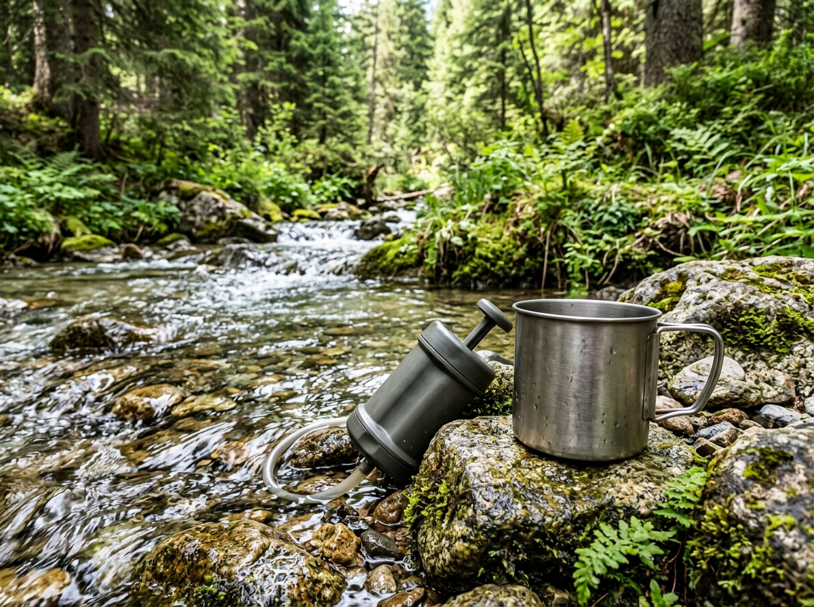

Fire
Learn about different fire structures and how they work.
Explore Fire →Choose a category to start learning outdoor survival skills.

Learn about different fire structures and how they work.
Explore Fire →
Learn about simple shelters for different outdoor situations.
Explore Shelter →
Learn about collecting and preparing water outdoors.
Explore Water →Learn basic navigation and ways to signal for help.
Explore Navigation →